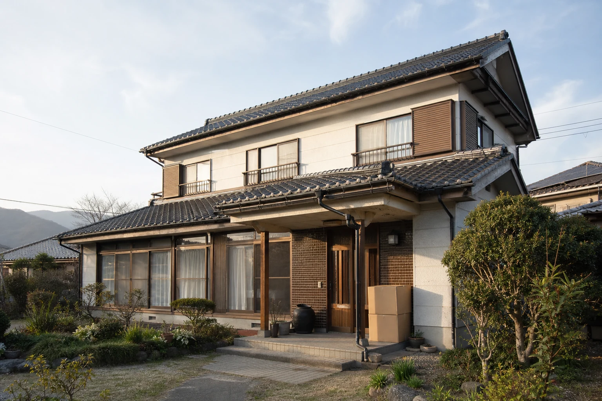

住む
このまま住み続けられるか、維持や修繕に何が必要かを確認します。
建物相談｜相談無料
住み続ける、直す、貸す、売る、解体する。何から考えればよいか分からない段階から、お話を伺います。

相談できること
まだ結論を出す必要はありません。建物の状態、ご家族の希望、必要になりそうな費用を見ながら考えます。
このまま住み続けられるか、維持や修繕に何が必要かを確認します。
リフォームや修繕の内容、優先順位、費用を考えるための情報を整理します。
貸し出す前に必要な修繕や設備、建物の状態について確認します。
現況のまま売るか、修繕してから売るか、建物の状況を見ながら考えます。
解体を決める前に、再利用や売却を含め、ほかの方法があるか確認します。
相談料金
メールまたは電話で、現在の状況と気になっていることをお聞かせください。資料がそろっていなくても構いません。
ご相談で確認すること
必要に応じて専門家や専門業者への相談も検討します。税務、登記、法律上の判断は、それぞれの専門家への確認が必要です。
建物相談の流れ
方針を決めてから相談する必要はありません。
現在の状況を、分かる範囲でお知らせください。
困っていることと、ご家族の希望を伺います。
住む、直す、貸す、売る、解体する方法を整理します。
現地調査が必要な場合は、内容と料金を先にお伝えします。
お伝えした内容をもとに、急がずご検討ください。
よくある質問
はい。メール・電話での建物相談は無料です。現地調査や資料作成など費用がかかる内容をご希望の場合は、実施前に内容と料金をお伝えします。
はい。方針が決まっていない段階からご相談いただけます。住む、直す、貸す、売る、解体する選択肢を一緒に整理します。
はい。建物の状況と選択肢を整理し、ご家族で相談するための材料としてお伝えします。
現地調査や報告書作成は有料になる場合があります。その場合は、実施前に調査内容と料金をご説明します。
無料相談
建物相談は無料です。料金がかかる業務をご希望の場合は、始める前に内容と金額をご説明します。